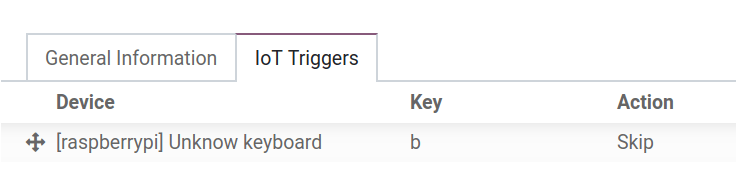

Conectar un pedal¶
Siempre es mejor que los operadores tengan ambas manos libres en todo momento cuando están trabajando en un entorno de fabricación. La caja IoT de Odoo hace esto posible gracias a un pedal.
De hecho, con un interruptor el operador podrá navegar entre pantallas y realizar acciones usando su pie al mismo tiempo. Esto se puede configurar en pocos pasos en el centro de trabajo en la aplicación Fabricación.
Conexión¶
Para conectar un pedal a la caja IoT, conecte ambos dispositivos mediante un cable. La mayoría de las veces esto se realiza con un cable USB (Bus serie universal).
Si el pedal es un dispositivo compatible será detectado de forma automática cuando esté conectado y no tendrá que hacer nada más.

Vincule un interruptor a un centro de trabajo en la aplicación Fabricación de Odoo¶
Para vincular un pedal a una acción, primero debe configurarlo en un centro de trabajo. Vaya a . Una vez allí, vaya al Centro de trabajo donde desea utilizar el pedal y agregue el dispositivo en la pestaña Activadores de IoT en la columna Dispositivo, deberá seleccionar Agregar una línea. Así podrá vincular el pedal a una opción de la columna desplegable Acción y, si así lo desea, también agregar una clave para activarlo. Un ejemplo de una acción en la aplicación Fabricación son los botones Validar o Marcar como hecho en una orden de trabajo de fabricación.
Importante
Debe tener en cuenta que se elige el primer activador de la lista. Por lo tanto, el orden de los activadores es importante y los puede arrastrar en cualquier orden. En la imagen anterior, al usar el pedal pasa a la parte del proceso en la que se está trabajando en ese momento.
Nota
El estado gráfico en la pantalla de la orden de trabajo indica si la base de datos está conectada de forma correcta al pedal.
Ver también